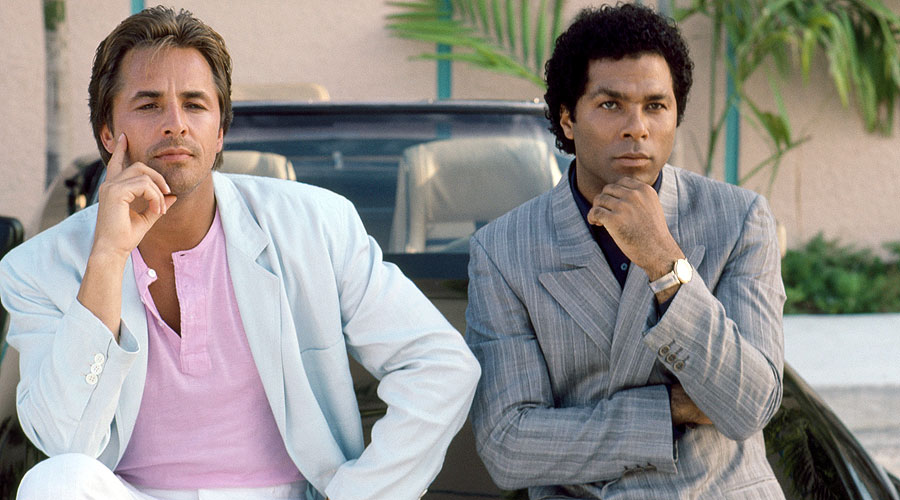
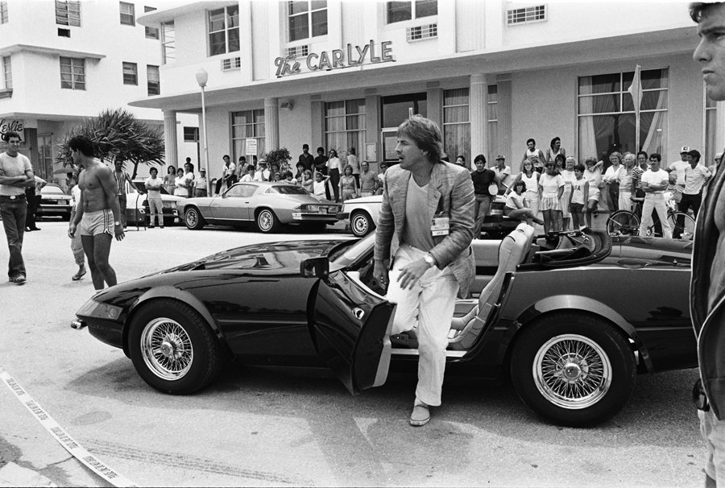
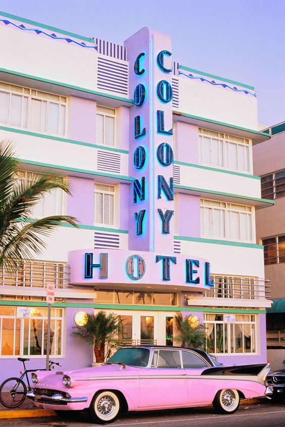
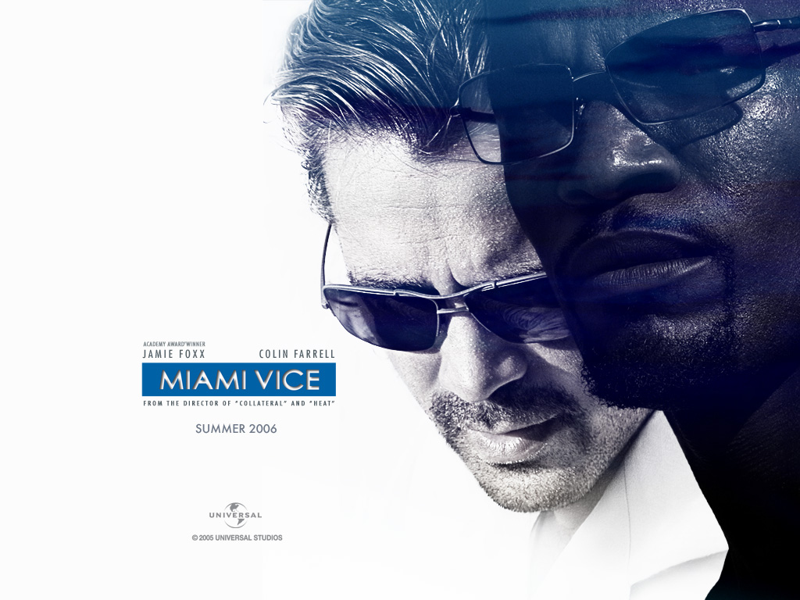

I had to write a paper on how Miami Vice was influential in the media industry and the world in general. Going into this paper, I didn't know anything about Miami Vice, but what I found out was actually really cool. Here it is:
Miami Vice is a television crime drama series created by Anthony Yerkovich and executive produced by Michael Mann for NBC. Legend has it that the NBC Entertainment Chief Brandon Tartikoff brainstormed the series with two words - MTV cops. The show starred Don Johnson as James "Sonny" Crockett and Philip Michael Thomas as Ricardo "Rico" Tubbs, two Metro-Dade Police Department detectives working undercover in Miami. The series ran for five seasons on NBC from 1984 to 1989.The show's action follows Rico and Tubbs' often unsuccessful efforts to battle drug trafficking and prostitution, dealing with complex themes of politics and corruption. Most of the series was shot on location in Miami, prompting a revitalization of the city, and scripts were often based on actual crimes that occurred in Miami during the five seasons of the show's production. The detectives repeatedly reference the "Whac-A-Mole" nature of drug interdiction, with its parade of drug cartels quickly replacing those that are apprehended. Episodes often ended in an intense gun battle, claiming the lives of several criminals before they could be apprehended.
After premiering in 1984 and garnering an unprecedented 15 Emmy Award nominations that year, "Miami Vice" would become one of the most revolutionary and influential television series of all time. Unlike most other shows at the time, Vice drew heavily upon 1980s New Wave culture and music. The good-looking, multiracial cast was dressed in dazzling tropical shirts and Versace silk and linen jackets over T-shirts and unbelted slacks. Thus attired, Crockett and sidekick Ricardo Tubbs were then sent out in a Ferrari or a cigarette boat on high-speed chases that almost always ended in a fireworks of gunfights and explosions. They also took advantage of new technology as one of the first American network television programs to be broadcast in stereophonic sound, and were noted for their integration of music and visual effects. People magazine stated that Miami Vice was the "first show to look really new and different since color TV was invented." But what made Miami Vice so special is that it went beyond television; it redefined American culture and turned Miami into a world class city.
During its debut in September 1984, Miami was reeling from a devastating race riot, the Mariel boatlift, a Haitian refugee influx, white flight, the rise of the drug cartels and an explosion in violent crime. Most people thought Miami was done for. So unbusy were South Beach streets that Miami Vice producers often didn’t bother with permits, Kinerk said. “They were filming all over Miami Beach,” he said. “They could film in the middle of the street. There was literally nobody there. There were no cars parked in the street.” When the producers needed a crowd, they usually had to wrangle one up, paying drama majors, models or musicians to mill around in the background of a shoot, said Fabio Arber, a production assistant and location manager for the show.
The show’s producers cannily recast a hyper-Miami as a principal character that even locals had trouble recognizing. However, It didn’t matter that this TV-Miami did not quite yet exist — it would continue to seduce millions of people around the world long after Miami Vice ended its U.S. network run in 1989. It’s a remarkable trajectory, from South Beach flophouses to $1,000-a-night rooms at the Setai, that Miami Vice played no small role in launching. Producers and art designers created decadently luxurious dance clubs, bars and restaurants in the bare lobbies and basements of Deco hotels where none of that existed. Obeying producer Michael Mann’s famous edict — “no earth tones” — they painted over the beige-and-brown revealing beautiful facades. They decorated beaches and hotel pools that hadn’t seen anyone under 70 in two decades with crowds of attractive young extras in bikinis.
Miami Vice’s instant popularity changed everything. The show had a huge impact on men's fashion, popularizing Ray-Ban sunglasses, T-shirts worn under suit jackets, and five o’clock shadow. A trend towards pastel colors and European fashion spread through America like wildfire. Designers like Gianni Versace and Hugo Boss kept Crockett and Tubbs wardrobe on the cutting edge, as they generally appeared in up to eight different outfits on each episode.
Once the show went into European syndication, German and Italian fashion photographers and photo agencies began booking shoots on South Beach with the architecture as backdrop. Tourism to the Beach, especially by Europeans, shot up. Another critical step in the South Beach re-emergence was the arrival of the New Yorkers. “The hip New York fashion crowd and nightlife entrepreneurs and people that like to hang around models went down here, saw the buildings and said, ‘Heck, this would make a good restaurant, this would make a cool nightclub, or a cool boutique hotel,’ and by 1990 SoBe was off and running,” Yerkovich said. Capitman, who embraced Vice and its producers, was vindicated, cementing political support for enacting legal protections for the district’s buildings. The assurance that Deco buildings would not be torn down in turn persuaded those first investors with real money to begin renovating hotels, said Michael Kinerk, an MDPL co-founder.
With predecessors like Saturday Night Fever and Blade Runner, Miami Vice was also a key influence in helping make cities cool again among young Americans whose parents had fled for the suburbs. Like those films, Miami Vice embraced the city’s multi ethnic demographic, a cause of much of the anxiety surrounding the city’s future. “Vice turned it into a virtue,” said journalist T.D. Allman, who was researching his seminal book, Miami: City of the Future when Vice premiered. The show did indulge in stereotypes, with drug-dealing Colombians and Jamaicans often at the end of the short stick, but the good guys were also black and white and Hispanic. It foretold, as did the real Miami, the country’s demographic shifts, said Allman.
As a student at University of Miami, I can attest to the continued influence of Miami Vice. Earlier this semester, one of my school’s fraternities threw a Miami Vice themed event. If 18-22 year old boys still think the show from the 80’s is cool enough to inspire a party, it must be pretty special. Many subsequent law dramas like NYPD Blue and Law & Order are very popular among my age group, and while they are very different in style and theme from Miami Vice, they followed the show's lead in breaking the genre's mold. On the other hand, HBO’s Ballers focuses on famous athletes instead of crime, but uses the same combination of action and glamor that Vice did to excite the audience. Miami Vice has also been directly referenced in other television programmes, with shows such as The Simpsons, Family Guy and Saturday Night Live, often spoofing the themes made famous in the series.
In 2006, Miami Vice’s executive producer Michael Mann created a movie adaptation of the show. It garnered favorable reviews from those who analyzed the movie by itself, but did not fare as well when compared to the 80’s version. On its own, Miami Vice is a great blueprint for TV and entertainment, but what set the original show apart and made it iconic is the real life cultural implications in the time and place it was made, and how it changed the course of both television and culture.
I've got my head in the clouds... {read more}
Josie11486@yahoo.com